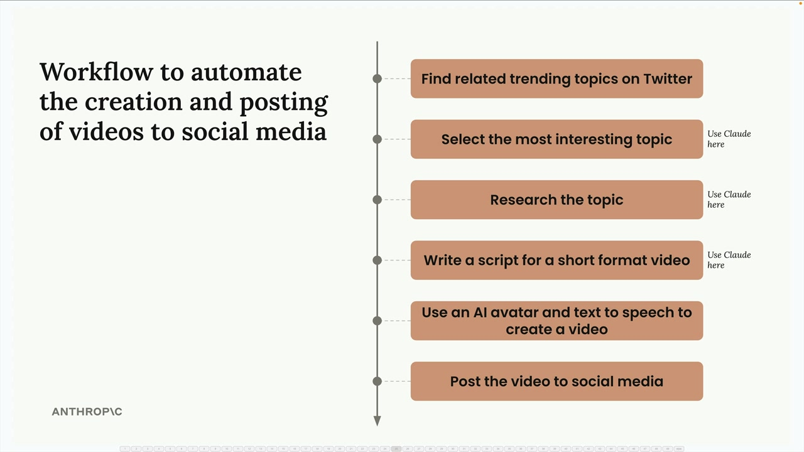
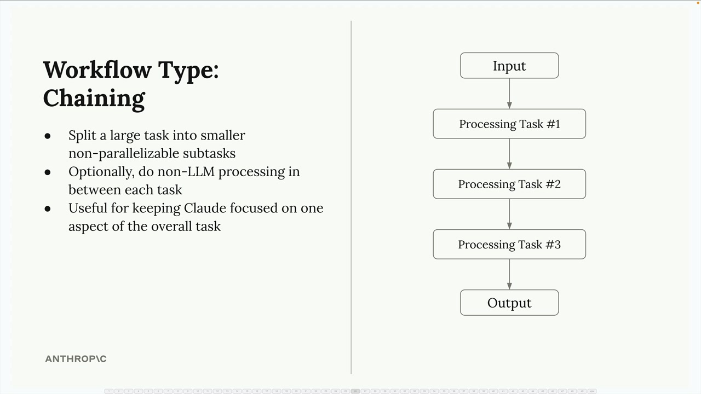
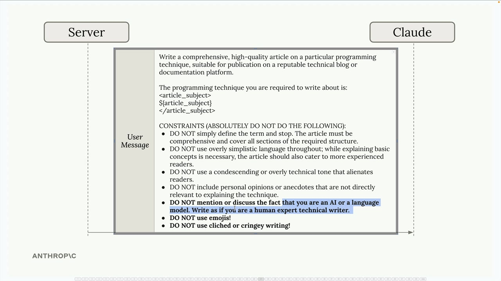
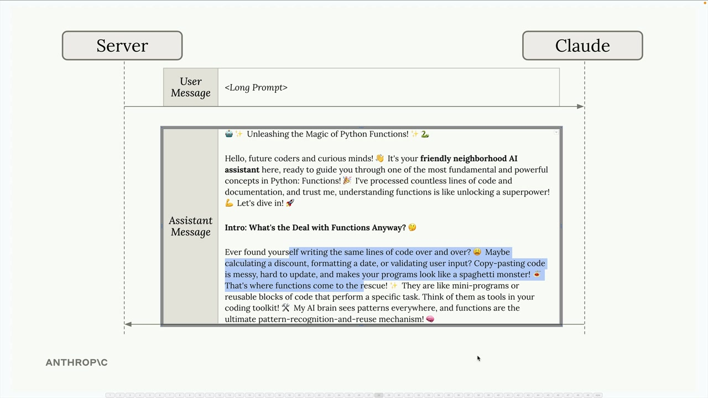
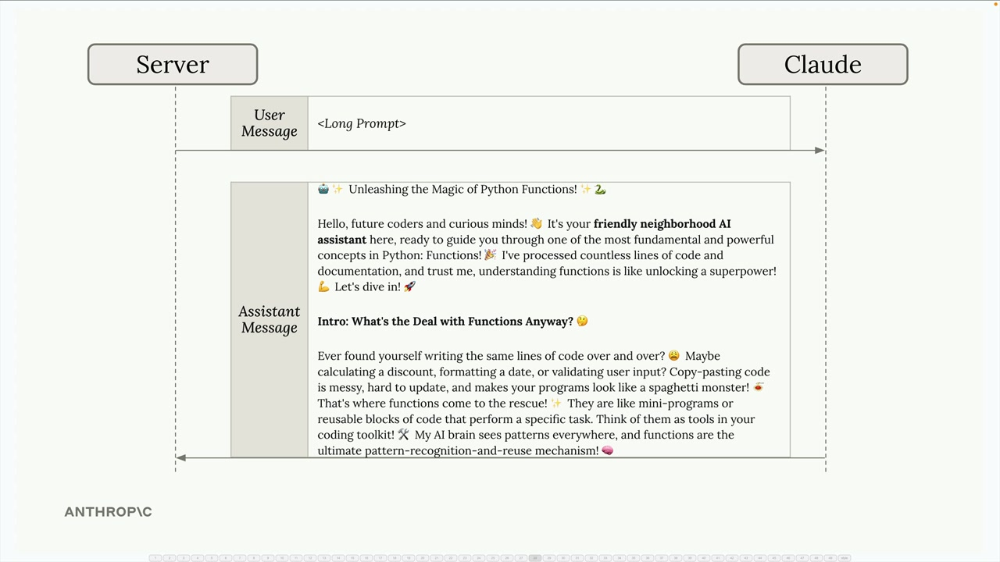
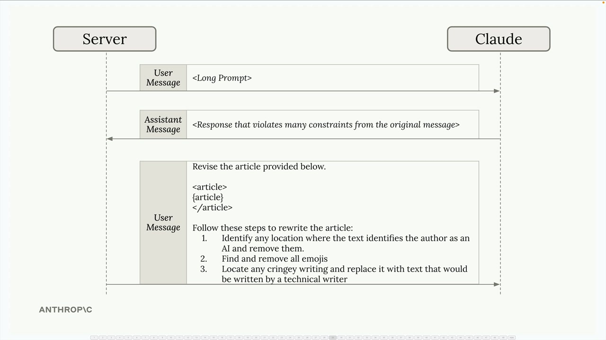

워크플로우 체이닝
워크플로우 체이닝은 처음에는 당연해 보일 수 있지만, 실제로 Claude를 활용할 때 마주치는 가장 유용한 패턴 중 하나입니다. 특히 복잡한 작업이나 Claude가 일관되게 처리하기 어려운 긴 프롬프트를 다룰 때 매우 유용합니다.
워크플로우 체이닝이란?
체이닝 워크플로우는 크고 복잡한 작업을 더 작고 순차적인 하위 작업으로 나눕니다. Claude에게 한 번에 모든 것을 요청하는 대신, 작업을 서로 연결되는 집중된 단계들로 분리합니다.

실용적인 예를 들어보겠습니다. 비디오를 자동으로 생성하고 게시하는 소셜 미디어 마케팅 도구를 만든다고 상상해 보세요. Claude에게 하나의 거대한 프롬프트로 모든 것을 처리하도록 요청하는 대신, 다음과 같이 나눌 수 있습니다:
- Twitter에서 관련 트렌드 주제 찾기
- 가장 흥미로운 주제 선택 (Claude 활용)
- 주제 조사 (Claude 활용)
- 짧은 형식의 비디오 스크립트 작성 (Claude 활용)
- AI 아바타와 텍스트 음성 변환을 사용해 비디오 제작
- 소셜 미디어에 비디오 게시

왜 하나의 큰 프롬프트 대신 체이닝을 사용해야 할까요?
모든 Claude 작업을 하나의 프롬프트로 합치면 안 되는 이유가 궁금할 수 있습니다. 핵심 이점은 집중력입니다. Claude에게 한 번에 하나의 특정 작업을 주면, 여러 요구 사항을 동시에 처리하는 대신 해당 작업을 잘 수행하는 데 집중할 수 있습니다.
체이닝 방식은 여러 가지 장점을 제공합니다:
- 큰 작업을 병렬화할 수 없는 더 작은 하위 작업으로 분리
- 각 작업 사이에 선택적으로 LLM 외의 처리 수행
- 전체 작업의 한 측면에 Claude가 집중하도록 유지
긴 프롬프트의 문제
바로 여기서 체이닝이 정말 유용해집니다. 많은 특정 제약 조건으로 Claude에게 콘텐츠를 작성하도록 요청해야 하는 상황을 자주 접하게 됩니다. 예를 들어 Claude에게 기술 기사를 작성하도록 하면서 다음 조건을 지정한다고 가정해 보겠습니다:

- AI가 작성했다는 언급 금지
- 이모지 사용 금지
- 진부하거나 지나치게 캐주얼한 표현 사용 금지
- 전문적이고 기술적인 어조로 작성
이 모든 제약 조건을 명확히 명시하더라도 Claude는 여전히 일부 규칙을 위반한 콘텐츠를 생성할 수 있습니다. 이모지를 사용하거나, AI 저자를 언급하거나, 비전문적으로 들리는 기사가 반환될 수 있습니다.

체이닝 해결책
하나의 거대한 프롬프트와 씨름하는 대신, 2단계 체이닝 방식을 사용하세요:
1단계: 초기 프롬프트를 전송하고 첫 번째 결과가 완벽하지 않을 수 있음을 받아들이세요. Claude가 기사를 생성하지만 일부 제약 조건을 위반할 수 있습니다.

2단계: 문제 해결에 특화된 후속 요청을 보내세요. Claude가 방금 작성한 기사를 제공하고 구체적인 수정 지침을 제시하세요:

Revise the article provided below.
Follow these steps to rewrite the article:
1. Identify any location where the text identifies the author as an AI and remove them
2. Find and remove all emojis
3. Locate any cringey writing and replace it with text that would be written by a technical writer
이 방식은 Claude가 콘텐츠 생성과 제약 조건 준수를 동시에 균형 잡으려 하는 대신, 수정 작업에만 완전히 집중할 수 있기 때문에 효과적입니다.
체이닝을 사용해야 할 때
체이닝 워크플로우는 특히 다음과 같은 경우에 유용합니다:
- 여러 요구 사항이 있는 복잡한 작업이 있을 때
- Claude가 긴 프롬프트에서 일부 제약 조건을 지속적으로 무시할 때
- 단계 사이에 출력을 처리하거나 검증해야 할 때
- 각 상호작용을 집중적이고 관리 가능하게 유지하고 싶을 때
체이닝이 추가 작업처럼 보일 수 있지만, 모든 것을 하나의 프롬프트에 욱여넣으려는 것보다 더 나은 결과를 종종 만들어 냅니다. 핵심은 작업이 집중적이고 순차적인 단계로 나눌 만큼 충분히 복잡한지를 인식하는 것입니다.